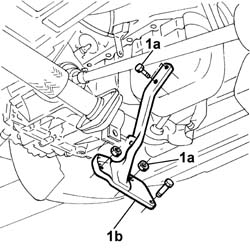
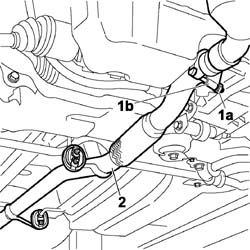
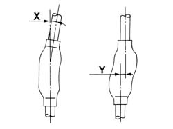
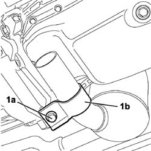
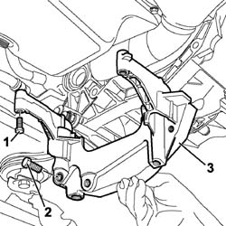
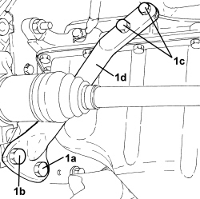

2110a60 manual gearbox/engine coupling bracket - r+r
- Path
- Procedures > 21 GEARBOX UNIT > 2110 MANUAL GEARBOX WITH DIFFERENTIAL > 2110A manual gearbox and differential assembly > 2110a60 manual gearbox/engine coupling bracket - r+r
- Kind
- repair procedure (removal / refitting; the operation number is the code)
- Applies to
- engines: 1.2 8v, 1.4 8v, 1.3 JTD 16V; all production periods
- Interactive page
- https://sloeber94.github.io/elrnDB-fDbl/en/#/2584583
Applies to: engines: 1.2 8v; all production periods
 Removing
Removing
 Refitting
RefittingPlace the car on a ramp.
Op. 7055B54 PROTECTION/GUARD UNDER ENGINE - R.R.
1. Undo the fixing nuts and bolts (1a) and remove the bracket connecting the manual gearbox to the engine (1b).

Applies to: engines: 1.2 8v; all production periods
Refitting
RemovingFit the bracket connecting the gearbox to the engine and tighten the fixing nuts and bolts to torque.
 | Fastening | Component | Ø | Value (daNm) |
|---|---|---|---|---|
- | Bolt | GEARBOX/ENGINE COUPLING BRACKET | M12 x 1.25 | (Bracket to gearbox) 8 |
Op. 7055B54 PROTECTION/GUARD UNDER ENGINE - R.R.
Remove the vehicle from the ramp.
Applies to: engines: 1.3 JTD 16V; all production periods
Removing
Refitting
Applies to: engines: 1.3 JTD 16V; all production periods

Applies to: engines: 1.3 JTD 16V; all production periods

Applies to: engines: 1.3 JTD 16V; all production periods

Applies to: engines: 1.4 8v; all production periods
Removing
Refitting- Position the vehicle on a lift.
1. Unscrew bolt (1a), screws (1b) and (1c) and remove the bell housing bracket (1d).

Applies to: engines: 1.4 8v; all production periods
Refitting
Removing- Place the bell housing bracket in its housing and secure it tightening the screws and bolt to the recommended torque.
- Remove the vehicle from the lift.
Topics linked from this page (1)
Topics that link to this page (25)
- 1020A20 crank case oil sump - r + r clean seals for sealant application
- 1020B10 cover of timing system with chain drive - r + r replace oil seal and gasket
- 1020D14 front crank shaft oil seal cover - r + r and replace seals for versions with oil pump on crank shaft, timing side
- 1020D16 front crankshaft oil seal cover - r+r and replace gaskets for versions with airconditioner
- 1020D18 front crank shaft cover oil seal - replace
- 1020D20 front crankshaft cover oil seal - replace for versions with air conditioner
- 1020D26 flywheel side oil seal cover - r+r
- 1024B10 engine flywheel - r + r for versions with manual gearbox
- 1024B54 ENGINE FLYWHEEL PROTECTION - R.R
- 1028H10 connecting rod and piston set - r r
- 1028H12 SET OF PISTONS WITH CONNECTING RODS - R.R WITH CYLINDER HEAD/S REMOVED
- 1028H20 piston with connecting rod - r r
- 1028H21 piston with connecting rod - r r
- 1032B44 toothed drive pulley - r + r with timing belt removed
- 1032B46 toothed drive pulley - r + r
- 1032B47 toothed drive pulley - r r for versions with air conditioner
- 1032B60 bolt pulley - r r
- 1032A12 CHAIN AND GEARS for timing system - R.R. for timing or Replacement.
- 1032C40 Timing CHAIN TENSIONER PLATE - R.R.
- 1084B12 engine oil pump - r+r
- 1084B26 emgine oil intake duct - r r
- 1810A20 clutch - r + r
- 1820a24 thrust bearing linkage - r + r
- 1820a24 THRUST BEARING LINKAGE - R + R
- 2110A10 manual gearbox and differential - r + r